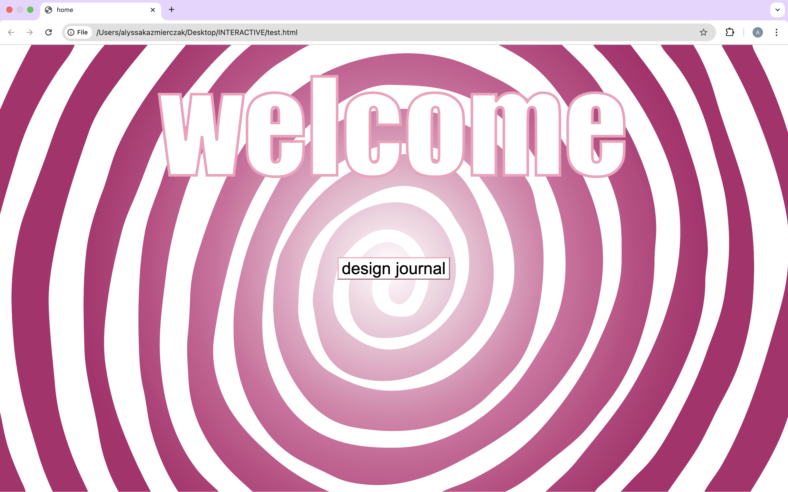
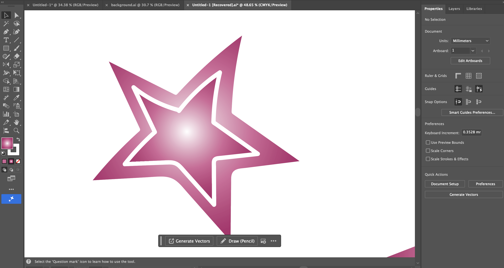
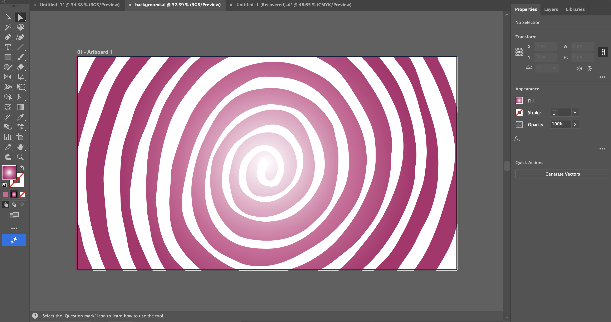
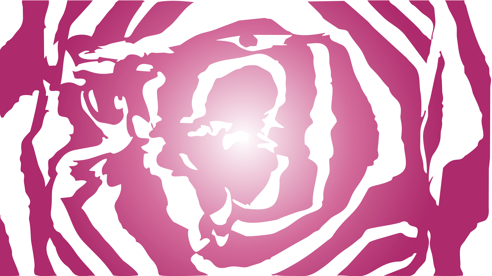

Above are screenshots of different phases of the design process.
I have had previous experience coding using HTML, CSS and Javascript so I had that foundation to
begin working on my portfolio.
Having so much creative freedom was exciting! Although proved to be more of a challenge than I would
have thought because I then
needed to translate these big ideas into workable code. This meant exploring more CSS styling
elements, like a custom cursor,
or moving objects, that I previously had little experience with. I got most of my basic syntax help
from W3 Schools, as well as my
heading font idea from here: a Google Font called Annie Use Your Telescope which I downloaded. For
the interactive parts, like
the orbiting stars on my home page, I used key frames which I learnt about from stack overflow, but
mostly
https://www.joshwcomeau.com/animation/keyframe-animations/
as it was a clear guide.